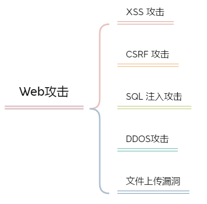
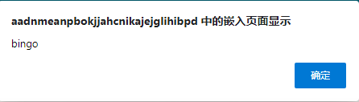
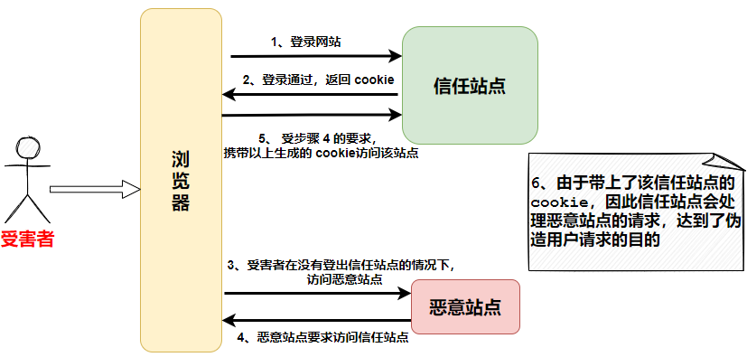
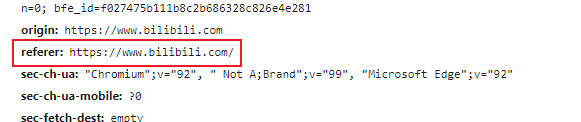
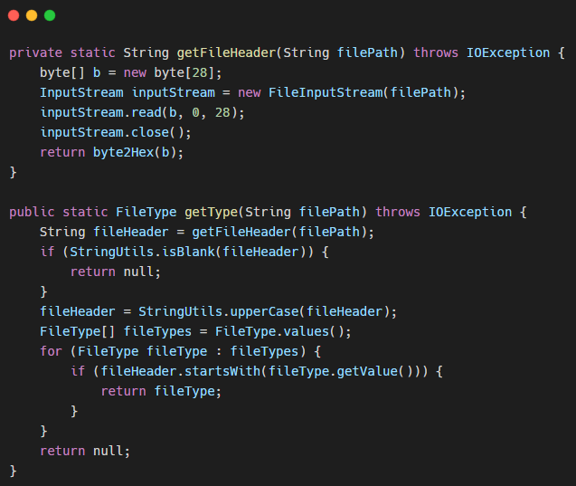
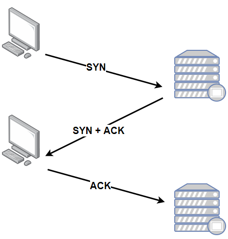

Web攻击
在互联网中，攻击手段数不胜数，我们平时不能以自己只是普通的开发程序员而不是安全方向的开发者为理由，而不去掌握基本的 Web 攻击手段！我们来熟悉一下有哪几种常见的 Web 攻击手段

常见的 Web 攻击手段主要有 XSS 攻击、CSRF 攻击、SQL 注入攻击、DDos 攻击、文件漏洞攻击等。这几种攻击方式的防护手段并不复杂，却还是有很多企业遭受了该攻击，朔源到头，还是因为人为的疏忽。
一、XSS 攻击
XSS 攻击的全称为 跨站脚本攻击（Cross Site Scripting）
为什么不叫
CSS，那是因为为了不跟层叠样式表（Cascading Style Sheet，CSS）混淆
XSS攻击 是 Web 应用中最常见到的攻击手段之一。
跨站脚本攻击，关键词 脚本。
攻击者常常在网页中嵌入了恶意的脚本程序，当用户打开该网页的时候，脚本程序便开始在客户端的浏览器后台执行，常用于盗取客户端的 cookie，用户名密码，下载执行病毒的木马程序，以及获取客户端 Admin 权限。
1、攻击原理
前端常用表单的形式向后台提交信息
1 | <input type="text" name="username" value="cbuc" /> |
很普通的一段html代码，向后台提交 username 的信息，正常情况下，用户一般会输入自己的 username，这个时候毫无问题，但是在不正常的情况下，用户输入的不是一个正常的字符串，而是 "/><script> alert("bingo") </script><!- 。按这个时候表单的内容就会变成
1 | <input type="text" name="username" value=""/><script> alert("bingo") </script><!-" /> |
这个时候向后台提交参数，由于 username 的不合法性，校验可能不通过，服务端就重定向会该页面，并且带上以上参数，这个时候页面就会弹出一个警告框：

警告框问题不是很大，是因为取决于这段脚本，如果攻击者稍做修改，那么性质可能就不一样了~
甚至，攻击者可以对URL进行操作，正常提交的地址为
1 | www.xxx.com/login?username="/><script> alert("bingo") </script><!-" |
攻击者可以对 URL 进行编码用来迷惑用户：
1 | www.xxx.com/login?username="%2F%3E%3Cscript%3E%20alert(%22bingo%22)%20%3C%2Fscript%3E%3C!-" |
2、防护手段
知道了如何攻击，防护起来就不难，我们对症下药即可。既然输入的参数不合法，我们就很有必要对入参进行校验，比如 <、>、"、"、'、' 这些特殊字符我们很有必要进行转义与校验。
二、CSRF 攻击
CSRF 攻击全称 跨站请求伪造 (Cross site request forgery)。是一种对网站的恶意利用，我们上面说到的 XSS攻击 是利用站点内的信任用户，自己去触发脚本而导致的攻击。而 CSRF 则是通过伪装来自受信任用户的请求去利用受攻击的网站。
CSRF 攻击，关键词：伪造。
攻击这盗用了访问用户的身份，以访问者的名义向第三方网站发送恶意请求，常用于利用访问者的身份发送消息，进行交易转账以及盗取账号。
1、攻击原理

受害者首先在信任站点完成了登录，并且生成了 Cookie，Cookie会在浏览器保存一定的时间。到这一步，用户如果在没有登出 信任站点 的情况下，访问了 恶意站点，这个时候 恶意站点 就会向 信任站点 发起请求，这个请求就会带上以上生成的 Cookie，当恶意请求来到 信任站点，信任站点 看到请求携带的 Cookie，就会判断该请求是 受害者 发出的。因此 信任站点 就会根据 受害者 的权限来完成 恶意请求 的指令，而这个指令可能是利用 受害者 的身份发送消息，转账支付等等操作，这样 恶意站点 就达到了伪造 受害者 请求 信任站点 的目的。
看到这个流程不知道你是否有所启发，不知道屏幕前的小伙伴是否有过 QQ 被盗用的经历，当然，有些盗用的手段与上面的流程是相似的。
该攻击手段在日常中十分常见。如果某个支付系统的转账地址为 www.xxx.com/pay?accountNum=xxxx&money=xxx。其中 accountNum 为转账目的的账户，money 为转账金额。那这个时候如果你刚巧登录过了该支付系统，又没有及时的登出，在访问恶意站点的时候，如果你点开了某张图片，而图片的地址为 ：
1 | <img src="www.xxx.com/pay?accountNum=xxxx&money=xxx" /> |
当你美滋滋地浏览图片的时候，却不知道此时你的账户上已经悄悄的少了指定金额！
这就是因为你没有及时的登出支付系统，而又点击了 恶意站点的 恶意链接，携带了你未过期的 Cookie，成功窃取了你的金额。
2、防护手段
同样知其症下其药！防护手段如下：
1）将 cookie 设置为 HttpOnly
CSRF 攻击的关键就在于利用了用户未过期的 Cookie，那么为了防止 Cookie 的盗取，就需要在 Cookie 中设置 HttpOnly 属性，这样通过程序（XSS 攻击）就无法读取到 Cookie 信息，避免了攻击者伪造 Cookie 的情况出现。
2）增加 token
该防护手段还是针对 Cookie 的盗取，由于请求中所有的用户验证信息都存放于 Cookie 中，因为我们抵御 CSRF 的关键就在于：如何在请求中放入攻击者所不能伪造的信息，并且该信息不能存放在 Cookie 中。那么我们就可以在请求返回中加入一个随机生成的 token，当请求来到时进行 token 的校验，如果校验不通过则认为是 CSRF 攻击而拒绝该请求。
3）通过 Referer
根据 HTTP 协议，在 HTTP 请求头上有一个字段叫做 referer，它记录了该Http 请求的来源地址。在通常情况下，访问一个安全受限的页面的请求都来自同一个网站。
在 CSRF 中恶意请求是从 恶意站点 发出的，因此要防御 CSRF 攻击，需要对每一个请求验证其 referer 值即可。

三、SQL 注入攻击
SQL注入 是程序员最经常遇到的，所谓 SQL注入，就是通过把 SQL 命令伪装成正常的请求参数，传递到服务端，欺骗服务器最终执行恶意的 SQL命令，达到入侵的目的。攻击者常常利用 SQL 注入的漏洞，来查询非授权的关键信息，修改数据库服务器的数据，改变表结构，危害极大！
1、攻击原理
我们查询用户存不存在往往是通过以下 SQL：
1 | SELECT * FROM s_user WHERE username = '' and password = '' |
当我们后端使用以下代码查询时，便会出现致命的漏洞
1 | Connection con = getConnection(); |
上面代码逻辑便是利用前端传入的参数进行数据库查询，乍看之下感觉毫无问题，但是这个时候如果 password 前端传过来的值是 ' or '1'='1
那这个时候 SQL 就会变成
1 | SELECT * FROM s_user WHERE username = '' and password = '' or '1'='1' |
这样的 SQL 不用试都知道会把数据库中的用户全都查出来，明明没有输入正确的密码，却返回了登录成功。而这便是一次简单且典型的 SQL 注入攻击。
' or '1'='1 危害是让用户免密码登录，如果传过来的值为 '; drop table xxx; -- 这个时候问题就大了！
2、防护手段
1）使用预编译语句
预编译语句 PreparedStatement 是 java.sql 中的一个接口，继承自 Statement 接口。
预编译语句和 Statement 的不同之处在于，创建 PreparedStatement 对象时就指定了 SQL 语句，该语句立即发送给 DBMS 进行编译，当该编译语句需要被执行时，DBMS 直接运行编译后的 SQL 语句，而不需要像其他 SQL 语句那样先将其编译：
1 | String sql = "SELECT * FROM s_user WHERE username = ? and password = ? "; |
可以看到，SQL 语句中原有的白能量已经用占位符 ？ 替代了，变量通过 setString() 方法进行设置。
2）使用 ORM 框架
防止 SQL 注入的关键手段在于对一些关键字进行转义，而常见的一些 ORM 框架，如 Mybatis，Hibernate等，都支持对响应的关键字或者特殊符号进行转义，可以通过简单的配置，很好的预防 SQL 注入的漏洞，降低普通开发人员进行安全编程的门槛。
四、文件上传漏洞
很多网站都有上传的功能，如上传图片、文件、压缩包等等。而这些资源往往是保存在远端服务器上。文件上传攻击指的就是攻击者利用一些站点没有对文件类型做很好的校验，上传了可执行的文件或脚本，并且通过脚本对服务器进行一定的权限操作，或是通过诱导外部用户访问该脚本文件，达到攻击的目的。
当然，这种攻击防护上也是比较简单，为了防止用户上传恶意的可执行脚本文件，以及将文件上传服务器当做免费的文件存储服务器来使用，我们需要对上传文件的类型进行白名单校验，并且需要限制上传文件的大小，上传的文件需要进行重新命名，使攻击这无法猜测到上传文件的访问路径。
其中对上传文件的类型进行白名单校验，并不能单单通过后缀名称来判断文件的类型，因为攻击者很有可能可以通过将可执行文件的后缀名称改为其他可上传的后缀名称进行上传，因为判断文件类型就需要使用更加安全的方式。
很多类型的文件，其实的几个字节内容是固定的，因此根据这几个字节的内容，就可以确定文件类型，而这几个字节也被成为 魔数

以上便是文件类型的魔数，然后我们通过获取文件的文件头与文件类型的魔数相比较来判断文件类型

五、DDOS攻击
DDos攻击 又称为 分布式拒绝服务攻击 (Distributed Denial of Service)，是目前最为强大，最难以防御的攻击方式之一。
在了解 DDoS 之前，我们需要先知道什么是 DoS。最基本的 DoS 就是利用合理的客户端请求里占用过多的服务器资源，从而使合法用户无法得到服务器的响应。DDoS 攻击便是在传统的 DoS 攻击的基础上产生的一类攻击方式。传统的 DoS攻击一般是一对一的方式，当攻击目标的CPU速度、内存或者网络带宽等各项性能指标不高的情况下，它的效果是明显的，但随着计算机与网络技术的发展，计算机的处理能力显著增加，内存不断增大，这便使得 DoS 攻击逐渐失去了效果。
这就跟单体应用向分布式架构的演进一样，传统的 DoS 演进到了分布式DoS (DDoS) 。
1、攻击原理
DDoS 攻击指的便是攻击者借助公共网络，将数量庞大的计算机设备联合起来作为攻击平台，对一个或多个目标发动攻击，从而达到瘫痪目标主机的目的。通常在攻击开始之前，攻击者会提前控制大量的用户计算机，这类计算机称之为 肉鸡，并通过指令使大量的的肉鸡在同一时刻对某个主机进行访问，从而达到瘫痪目标主机的目的。
2、DDoS分类
DDoS 是一种攻击手段，其中又分为好几种 DDoS攻击
1）SYN Flood
SYN Flood 是互联网中最经典的攻击方式之一，要了解该攻击方式，我们需要从 TCP 协议连接的过程说起。众所周知，TCP 协议在通信之前，必须先建立基于 TCP 协议的一个连接，以下是建立连接的过程：

这是一张非常建议的 TCP 三次握手的过程。
- 第一步，客户端发送一个包含 SYN 标识的 TCP 报文，SYN 即同步（Synchronized）的意思，SYN报文会指明客户端的端口号以及 TCP 连接的初始序列号
- 第二步，服务器在收到客户端的 SYN 报文后，会返回一个 SYN+ACK 的报文，表示客户端请求被接收，同时 TCP 序列号被加 1，ACK 即确认（Acknowledgment）的意思
- 第三步，客户端在接收到服务端的 SYN + ACK 报文后，也会返回一个 ACK 报给服务端，同样，TCP 的序列号加 1，这时，TCP连接便建立好了，接下来便可以进行数据通信了。
TCP 协议 是可靠的传输协议，在三次握手的过程中设置了一些异常处理机制。第三步中如果服务器没有收到客户端的 ACK 报文，服务端一般会进行重试，也就是再次发送 SYN + ACK 报文给客户端，并且一直处于 SYN_RECV 的状态，将客户端加入等待列表；另一方面，服务器在发出 SYN + ACK 报文后，会预先分配一部分资源给即将建立的 TCP 连接，这个资源在等待重试期间一直保留，由于服务器的资源有限，可以维护的等待列表超过极限之后就不会再接收新的 SYN 报文，也就是拒绝建立新的 TCP 连接。
这个时候我们便可以说说 SYN Flood 是怎么回事了，SYN Flood就是利用了 TCP 协议三次握手的过程来达到攻击的目的。攻击者伪造大量的 IP 地址给服务器发送 SYN 报文，因为伪造的 IP 地址不可能存在，也就不可能从客户端得到任何响应，就会一直卡在第三步，服务端就得维护一个非常大的半连接等待列表，并且不断对这个列表中的 IP 地址进行遍历重试，占用了大量的系统资源。而由于服务器资源有限，恶意的连接占满了服务器的等待队列，导致服务器不再接收新的 SYN 请求，使正常的用户无法完成通信。
2）DNS Query Flood
DNS Query Flood 实际上就是 UDP Flood 攻击的一种变形，因为 DNS 服务在互联网中具有不可替代的作用，因此一旦 DNS 服务器 瘫痪，影响将非常大！
DNS Query Flood 攻击采用的方法是向被攻击的服务器发送海量的域名解析请求。而这部分请求解析的域名一般都是随机生成的，大部分不存在，并且通过伪造端口和客户端IP，防止查询请求被 ACL（访问控制列表）过滤。被攻击的 DNS服务器 在收到域名解析的请求后，首先会在自己的服务器上查找是否该域名的 IP，因为域名的不存在，在自身自然是找不到的，因此DNS 服务器便会向上层的 DNS服务器递归查询域名，直到全球互联网的 13台 根DNS服务器。大量不存在的域名解析请求给服务器带来了很大的负载，当解析请求超过一定量级的时候，就会造成 DNS服务器 解析域名超时，使正常的域名都查询不到对应的 IP，达到了攻击的效果。
3）CC 攻击
CC（Challenge Collapsar）攻击是基于应用层 HTTP 协议发起的攻击，也称为 HTTP Flood
CC攻击的原理是通过控制大量的 “肉鸡” 或者利用从互联网上搜寻的大量匿名的 HTTP 代理，模拟正常用户给网站发起请求直到该网站拒绝服务为止。大部分网站会通过 CDN 以及分布式缓存来加快服务端的响应，提高网站的吞吐量。而这些恶意的 HTTP 请求会有意的避开这些缓存，需要进行多次 DB 查询操作或者一次请求会返回大量的数据，加速系统资源的消耗，从而拖垮后端的业务处理系统。
以上便是常见的 Web 攻击手段，知其然知其所以然，安全是极为重要也是极难防护的，每个开发人员都应该引起重视